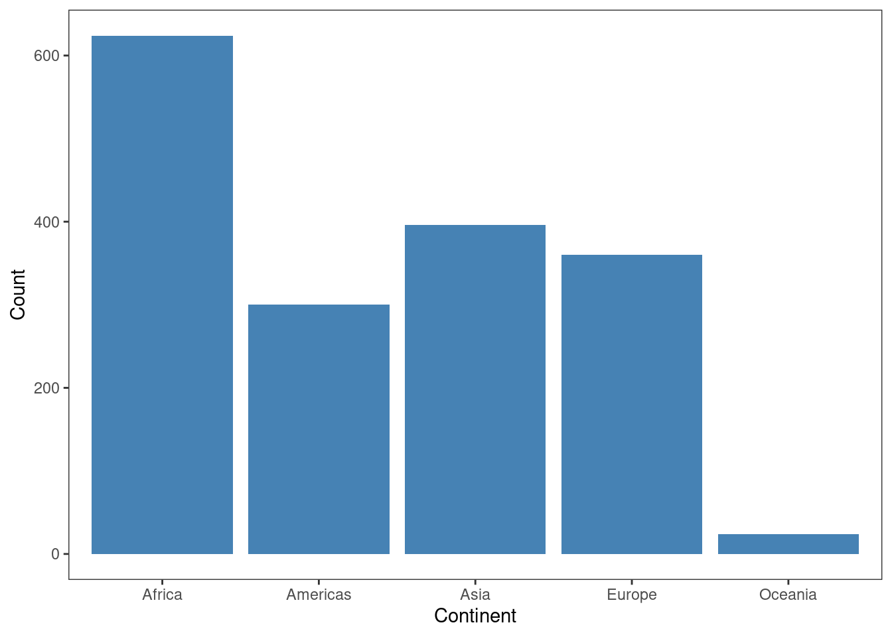
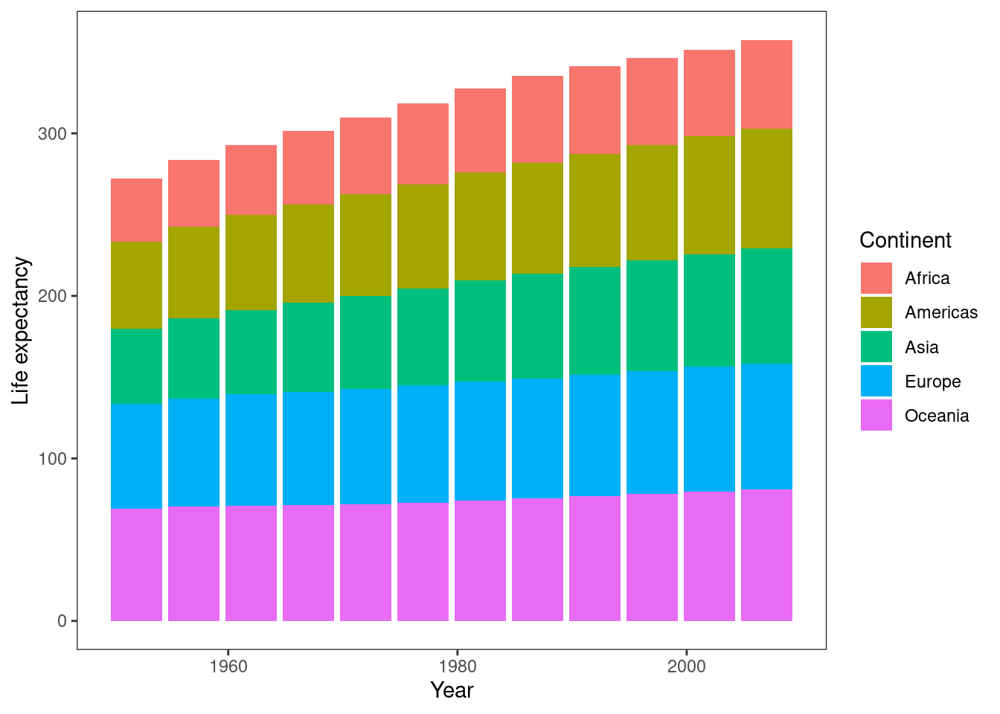
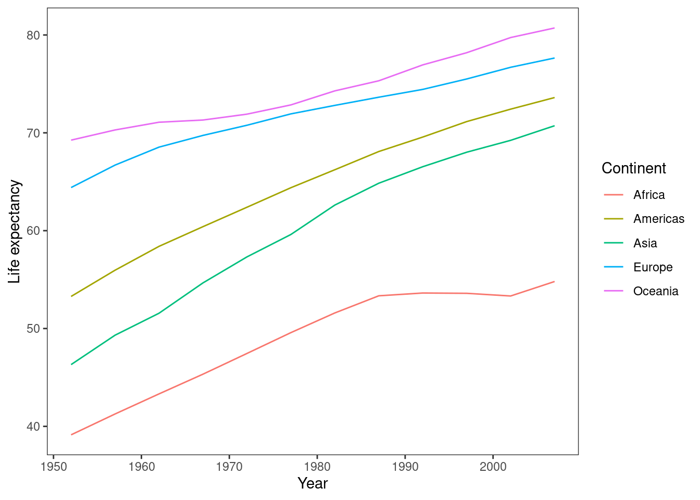
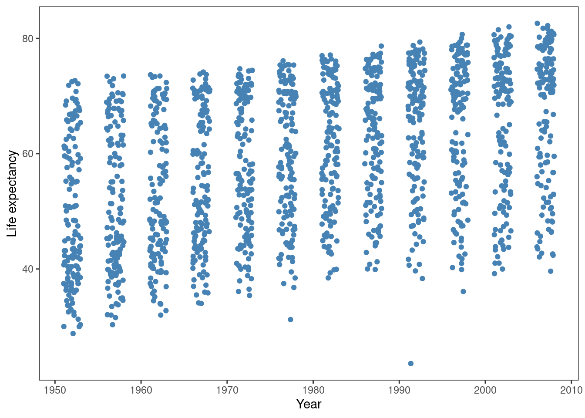
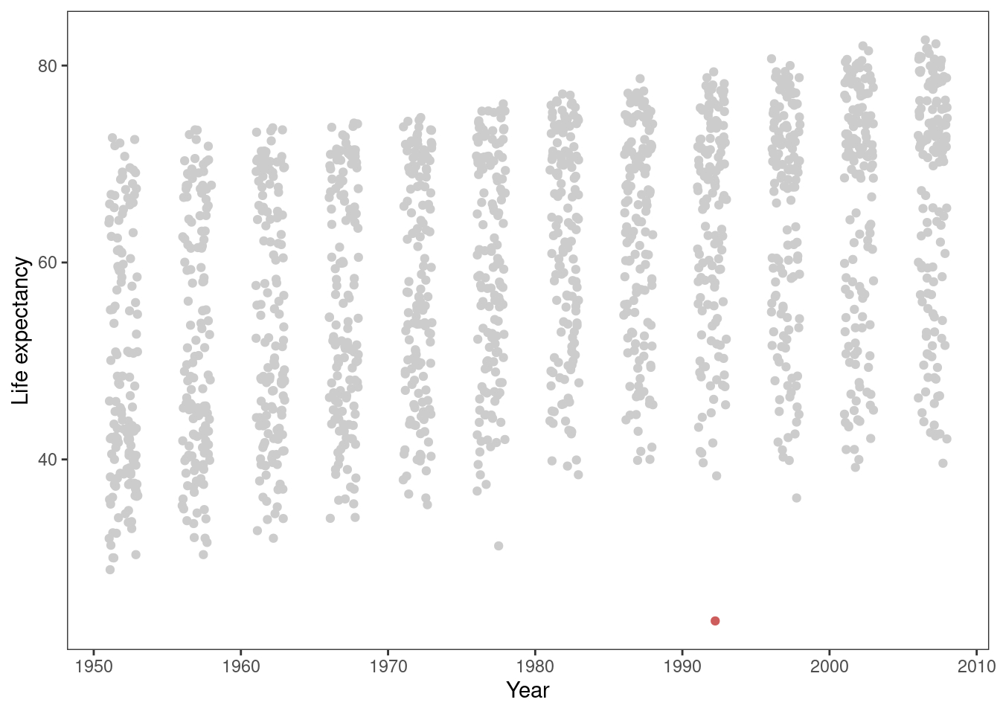
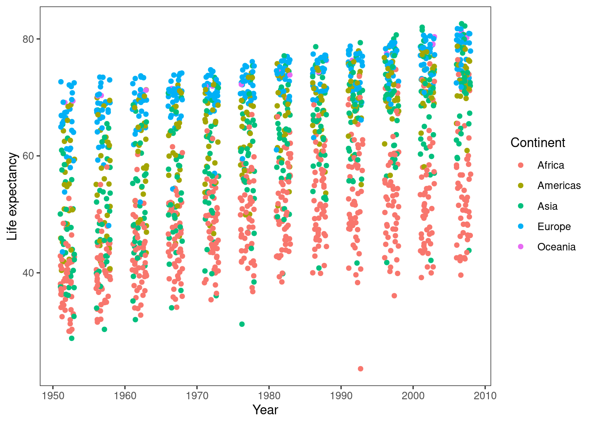
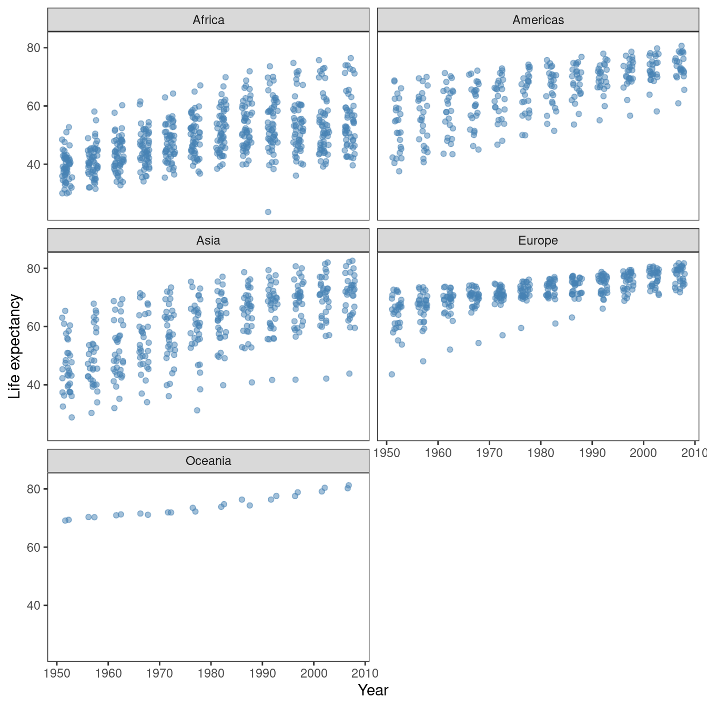
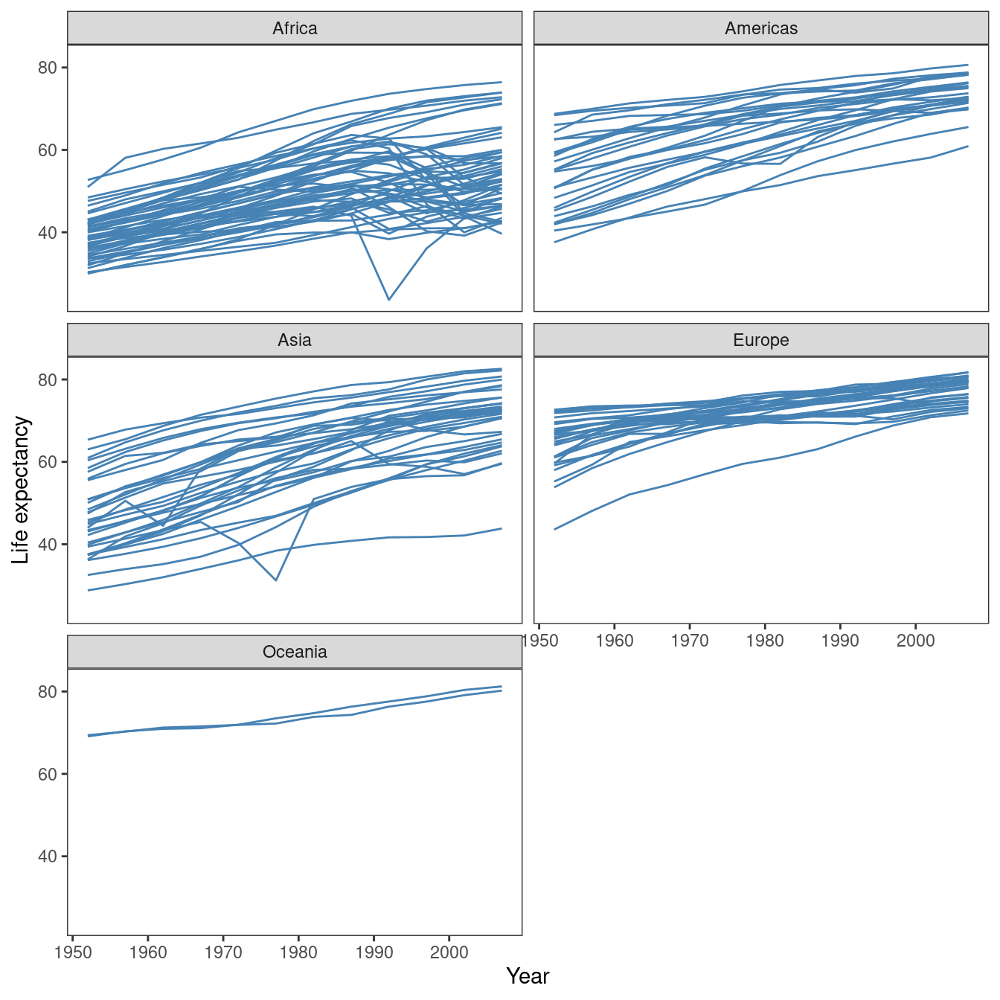

library(gapminder)
library(ggplot2)
theme_set(theme_bw() +
theme(panel.grid = element_blank()))Grafíky
Všechen kód co tady je se dá zkopírovat a pustit na https://rdrr.io/snippets/ kdyby sis to chtěl vyzkoušet.
Nejdřív jsem si načetl knihovnu s daty gapminder a knihovnu na dělání grafů ggplot2. Pak jsem si ještě jenom nastavil vzhled grafů, tak jak se mi líbí.
Ten dataset gapminder má 1,704 řádků a 6 sloupců - země odkud ty měření pocházejí, kontinent, rok, očekávaná délka života, populace, a GDP na hlavu:
dplyr::glimpse(gapminder)Rows: 1,704
Columns: 6
$ country <fct> "Afghanistan", "Afghanistan", "Afghanistan", "Afghanistan", …
$ continent <fct> Asia, Asia, Asia, Asia, Asia, Asia, Asia, Asia, Asia, Asia, …
$ year <int> 1952, 1957, 1962, 1967, 1972, 1977, 1982, 1987, 1992, 1997, …
$ lifeExp <dbl> 28.801, 30.332, 31.997, 34.020, 36.088, 38.438, 39.854, 40.8…
$ pop <int> 8425333, 9240934, 10267083, 11537966, 13079460, 14880372, 12…
$ gdpPercap <dbl> 779.4453, 820.8530, 853.1007, 836.1971, 739.9811, 786.1134, …Sloupcové grafy
Sloupcové grafy jsou fajn když porovnáváš nějaký hodnoty (nejčastěji počet) mezi různými úrovněmi nějaké kategorické proměnné. Například takhle se můžeš podívat na to, kolik záznamů (řádků) máš v datasetu od každého kontinentu:
ggplot(gapminder, aes(continent)) +
geom_bar(fill = "steelblue") +
labs(x = "Continent", y = "Count")
Z tohohle grafu je třeba hezky vidět že máš třeba dvakrát tolik záznamů z Afriky co z Ameriky (délky sloupců se dobře vizuelně porovnávají).
Sloupcové grafy jsou ale už horší když máš: a) hodně úrovní proměnné na ose x-, a b) úrovně rozdělené na ještě nějaké další skupiny. Například tenhle graf znázorňuje to jak se průměrná očekávaná délka života měnila během času napříč různými kontinenty:
ggplot(gapminder, aes(year, lifeExp, fill = continent)) +
geom_bar(stat = "summary", fun = "mean") +
labs(x = "Year", y = "Life expectancy", fill = "Continent")
Z toho grafu se dá tak akorát vyčíst že očekávaná délka života šla v průběhu času nahoru, další věci už jsou složitější, např. je těžké porovnávat trendy v průměrné délce života mezi dvěma kontinenty.
A ještě hůř, tím že jsou ty sloupce naskládané na sebe, tak osa y- ukazuje kumulativní součet průměrné délky života napříč kontinenty, což vůbec nedává smysl. Například, co znamená to že v prvním sloupci je kumulativní počet délky života pro Asii 180 let? Nic.
Čárové grafy
Na tenhle typ otázky jsou mnohem lepší čárové grafy:
ggplot(gapminder, aes(year, lifeExp, col = continent)) +
geom_line(stat = "summary", fun = "mean") +
labs(x = "Year", y = "Life expectancy", col = "Continent")
Tady vidíš trendy pro každou zem v absolutních (ne kumulativních) číslech, a můžeš je tím pádem mnohem jednoduššeji přečíst a porovnávat. Například u tohohle grafu je dobře vidět, že Africe se růst průměrné očekávané délky života zastavil kolem roku 1988 a znova rozjel kolem roku 2000 - to se z toho předchozího grafu (Figure 2) skoro vůbec nedá vyčíst.
Obecně čárové grafy se hodí na porovnávání nějakých hodnot co se mění v průběhu času (proto se jim občas také říká timeseries chart).
Bodové grafy
V předchozích grafech jsem ukazoval shrnovací statistiky (počet a průměr), ale často je hodně užitečné se podívat na distribuce surových (raw) hodnot dat a v tom jsou skvělé bodové grafy. Například, místo toho abych ty hodnoty očekávané délky života zprůměroval, tak se můžu prostě prostě podívat na všechny záznamy (země) najednou:
ggplot(gapminder, aes(year, lifeExp)) +
geom_jitter(width = 1, height = 0, col = "steelblue") +
labs(x = "Year", y = "Life expectancy")
Tady jsem použil techniku kde jsem přidal trochu náhodného šumu k pozici těch bodů na ose x-, aby se dva body které mají stejný rok a podobnou očekávanou délku života nepřekrývaly.
Tady s toho je například hezky vidět, že jsou v datech nějací outliers - například kolem roku 1992 měla jedna země hrozně nízkou očekávanou délku života:
ggplot(gapminder, aes(year, lifeExp, col = lifeExp < 25)) +
geom_jitter(width = 1, height = 0) +
scale_color_manual(values = c("grey80", "indianred")) +
labs(x = "Year", y = "Life expectancy") +
guides(col = "none")
Můžeme si tu zemi najít a vidíme že to je Rwanda v roce 1992:
dplyr::filter(gapminder, lifeExp < 25)# A tibble: 1 × 6
country continent year lifeExp pop gdpPercap
<fct> <fct> <int> <dbl> <int> <dbl>
1 Rwanda Africa 1992 23.6 7290203 737.(občas můžou data vypovídat o drsné realitě)
Stejně tak jako jsme použili barvu pro porovnávání kontinentů u sloupcových a čárových grafů, tak to můžeme udělat u bodových grafů:
ggplot(gapminder, aes(year, lifeExp, col = continent)) +
geom_jitter(width = 1, height = 0) +
labs(x = "Year", y = "Life expectancy", col = "Continent")
Problém tady je, že pokud máme hodně data a dost kategorií (obvykle 3 a víc), tak se ty body budou barevně tlouct a zase z toho grafu nebude jednoduché něco vyčíst. Tudíž je občas dobrý napad ty grafy rozdělit na několik menších panelů:
ggplot(gapminder, aes(year, lifeExp)) +
geom_jitter(alpha = 0.5, width = 1, height = 0, col = "steelblue") +
labs(x = "Year", y = "Life expectancy") +
facet_wrap(~continent, ncol = 2)
I tohle má svoje úskalí - např. tím že se mi zmenšil horizontální prostor (musel jsem vedle sebe nacpat dva grafy místo jednoho), tak se ty body zase začaly překrývat a musel jsem je trochu zprůhlednit.
Alternativně taky můžeme udělat podobnou figuru s čárovými grafy, což je možná ještě lepší nápad protože nám to ukáže jak se jednotlivé země vyvíjely v průběhu času:
ggplot(gapminder, aes(year, lifeExp, group = country)) +
geom_line(col = "steelblue") +
labs(x = "Year", y = "Life expectancy") +
facet_wrap(~continent, ncol = 2)
Teď můžeme zase zkoumat zajímavé trendy v jednotlivých zemích. Např. je vidět, že v Evropě a Asii byly dlouho dobu dvě země které na tom byly dlouhou dobu mnohem hůř než ostatní:
library(dplyr)
gapminder2 <- gapminder %>%
group_by(continent, country) %>%
summarize(lifeExp = mean(lifeExp))
filter(gapminder2, continent == "Asia") %>%
arrange(lifeExp) %>% filter(row_number() == 1)# A tibble: 1 × 3
# Groups: continent [1]
continent country lifeExp
<fct> <fct> <dbl>
1 Asia Afghanistan 37.5filter(gapminder2, continent == "Europe") %>%
arrange(lifeExp) %>% filter(row_number() == 1)# A tibble: 1 × 3
# Groups: continent [1]
continent country lifeExp
<fct> <fct> <dbl>
1 Europe Turkey 59.7Vidíme že to byl Afghanistán a Turecko.
Naopak v Africe na tom byla jedna země líp:
filter(gapminder2, continent == "Africa") %>%
arrange(-lifeExp) %>% filter(row_number() == 1)# A tibble: 1 × 3
# Groups: continent [1]
continent country lifeExp
<fct> <fct> <dbl>
1 Africa Reunion 66.6Závěr
Tak to je tak asi všechno, co jsem ti chtěl ukázat - s grafama se dá hezky hrát a jejich síla je v tom, že ti můžou ukázat něco, na co by tě jinak nenapadlo se podívat. Obecně se taky hodí mít na mysli pár pravidel:
- Pokud to velikost dat dovoluje, tak čím blíž je graf surovým datům, tím líp
- Shrnutí jako počet, součet, průměr apod. jsou fajn, ale mohou klamat (například když jsou v datech outliers, nerovnoměrné distribuce, apod.)
- Z dobře znázorněných surových dat toho člověk může často překvapivě hodně vyčíst
- Graf který ukazuje jednu věc dobře je lepší než graf který ukazuje deset věcí dobře, a mnohem lepší než graf který ukazuje deset věcí špatně
- Často člověka svádí sklon k tomu snažit se toho do grafu narvat co nejvíc
- Ale to z pravidla zhoršuje jeho čitelnost!
- Důležité je odolat, v jednoduchosti je síla.
- Graf by měl maximalizovat poměr inkoustu vůči datům (Edward Tufte)
- To co je na grafu nejdůležitější jsou data
- Ostatní věci jako popisky os, gridlines, apod., jsou vedlejší a hůř - mohou odvádět pozornost od dat.
- Proto dobrý grafy používají co nejvíc inkoustu/pixelů na ukázání dat a co nejmíň na ukázání jiných věcí, v rozumné míře (např. většinou je zbytečné mít víc než ~5 popisek na každé ose)